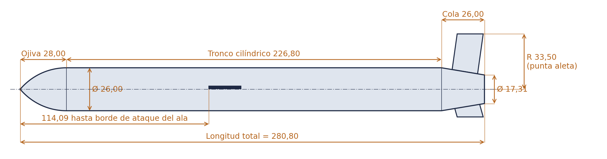
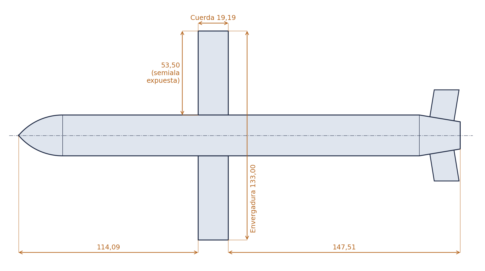
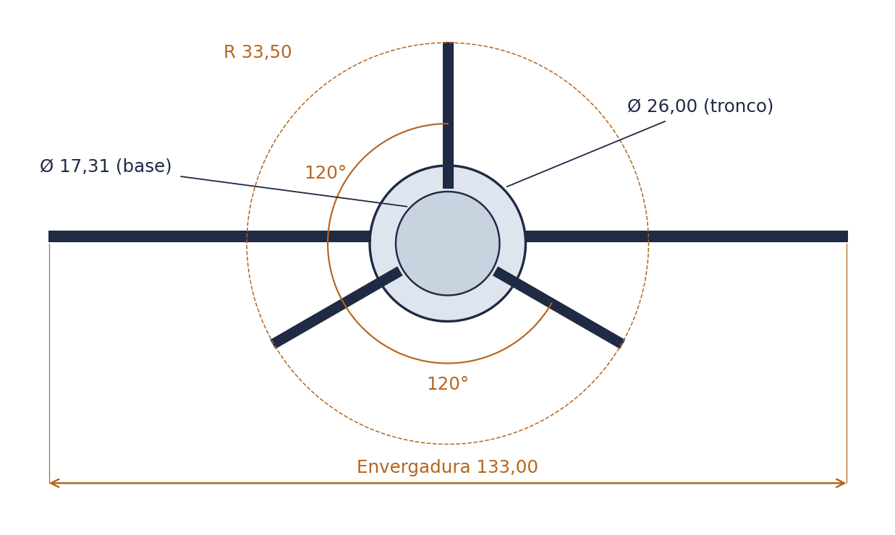
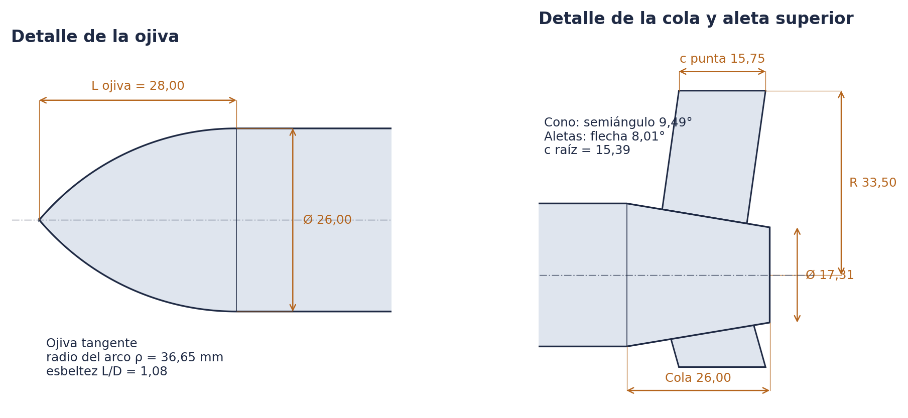
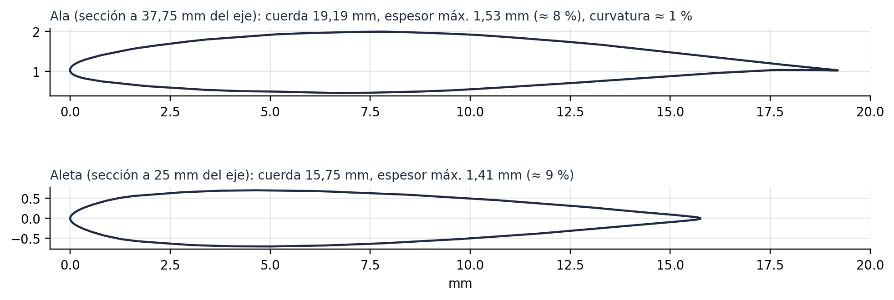

Cifras principales
Medidas extraídas de la geometría B-rep del modelo (mm).
280,80Longitud total
Ø 26,00Diámetro del fuselaje
133,00Envergadura alar
10,8Esbeltez L/D
3 × 120°Aletas de cola
Medidas por componente
Posiciones axiales medidas desde la punta de la ojiva.
Ojiva
- Tipo
- tangente
- Longitud
- 28,00
- Diámetro base
- 26,00
- Radio del arco ρ
- 36,65
- L/D ojiva
- 1,08
Tronco
- Diámetro
- 26,00
- Longitud
- 226,80
- Posición
- 28,00 – 254,80
- Fracción de L
- 80,8 %
Cola troncocónica
- Longitud
- 26,00
- Ø inicial → Ø base
- 26,00 → 17,31
- Semiángulo
- 9,49°
- Posición
- 254,80 – 280,80
Alas
- Envergadura
- 133,00
- Semiala expuesta
- 53,50
- Cuerda (constante)
- 19,19
- Espesor máx.
- 1,53 (≈ 8 %)
- Borde de ataque
- 114,09
- Alargamiento
- 6,93
Aletas de cola
- Número
- 3 a 120°
- Radio de punta
- 33,50
- Cuerda raíz / punta
- 15,39 / 15,75
- Flecha
- 8,0°
- Espesor máx.
- 1,41 (≈ 9 %)
- Borde de ataque raíz
- 261,25
Conjunto
- Volumen
- 141,56 cm³
- Superficie
- 286,0 cm²
- CdG (homogéneo)
- 143,33 (51 % L)
- Escala vs. real
- ≈ 1:20
Planos acotados
Dibujados a partir de las medidas exactas del sólido. Cotas en mm.





Descargas
Geometría y documentación del modelo.